×
Click anywhere to close
Mirroring live switch traffic to a dedicated capture NIC on the Hyper-V host using a Cisco SPAN session and Wireshark, to get real visibility into what's actually crossing the wire in the lab.
This lab was not built the way it was first designed. The original plan used a dedicated capture VM as the SPAN destination. That plan ran into a limitation that changed the design, and the reasoning behind that change is as useful as the final configuration, so it comes first.
The first design cabled a second physical NIC on the Hyper-V host (a USB-to-Gigabit adapter) to the SPAN destination port, bound that adapter to a dedicated external virtual switch named SPAN-Monitor, and attached a second virtual NIC on a Windows 11 client VM. That virtual NIC was set to Hyper-V's Port Mirroring: Destination mode, with Wireshark running inside the VM.
The VM saw only a thin slice of the mirrored traffic, while capturing on the host's adapter directly showed far more. The limitation comes from how the virtual switch works:
The fix was to remove the virtual switch and the VM from the capture path entirely. The Hyper-V host is the destination capture machine in this lab: the SPAN destination port (Fa0/6) is cabled to a dedicated physical adapter on the host, and Wireshark runs directly on the host and captures on that adapter. The host sees every frame the adapter receives, with no virtual switch deciding what to forward. Every capture on this page was taken this way.
Takeaway: a virtual switch is a poor place to receive a SPAN feed. Put the capture tool on the physical interface that receives the mirrored traffic, and use Hyper-V port mirroring only for VM-to-VM traffic.
The capture NIC here is a USB-to-Gigabit adapter, which works for a lab but is the weak link in the design. USB adapters used for this capture path have dropped the link under sustained mirrored load, and one had to be replaced. Mirroring a trunk as a source makes that worse, since it carries every VLAN on the link. For sustained captures, a PCIe NIC (an Intel i210 or i350 class card) is the better choice, and keeping the source list narrow helps.
Port mirroring (SPAN, or Switch Port Analyzer) copies traffic from one or more source ports to a destination port, so a packet analyzer can see traffic it would never normally receive on a switched network. The goal here was to mirror the uplinks and trunk carrying inter-VLAN and lab traffic to a capture point, then use Wireshark to baseline normal traffic and spot anything worth investigating: retransmissions, failed auth, unexpected broadcast/multicast chatter, DNS failures, and so on.
The setup has two halves: configuring the SPAN session on the physical Cisco switch, and dedicating a physical NIC on the Hyper-V host to receive that mirrored traffic, with Wireshark running directly on the host as the destination capture machine.
On the Cisco switch, a local SPAN session was created with multiple source ports feeding a single destination port dedicated to monitoring:
Switch001#conf t
Switch001(config)#monitor session 1 source interface fa0/2 both
Switch001(config)#monitor session 1 source interface fa0/3 both
Switch001(config)#monitor session 1 source interface fa0/4 both
Switch001(config)#monitor session 1 source interface fa0/5 both
Switch001(config)#monitor session 1 source interface fa0/23 both
Switch001(config)#monitor session 1 destination interface fa0/6
Switch001(config)#end
Switch001#write memoryFa0/2 through Fa0/5 and the Fa0/23 trunk were set as sources in both directions (RX and TX), with Fa0/6 as the dedicated destination port feeding the capture NIC. show monitor session 1 confirms the session is active with ingress learning disabled on the destination port, which is expected since a SPAN destination port doesn't participate in normal switching.
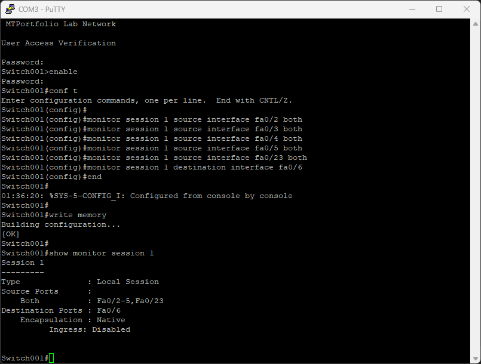
Rather than feeding mirrored traffic into an existing lab switch, a second physical NIC on the Hyper-V host (a USB-to-Gigabit adapter) was cabled directly to the SPAN destination port and dedicated entirely to capture traffic. The Hyper-V host itself is the destination capture machine in this lab: Wireshark runs on the host and captures on that adapter directly, with no virtual switch or VM in the path. This keeps mirrored traffic off the routed lab network.
A quick check in Network Connections on the host confirms Ethernet 3 is the ASIX USB-to-Gigabit adapter carrying the SPAN feed from Fa0/6.
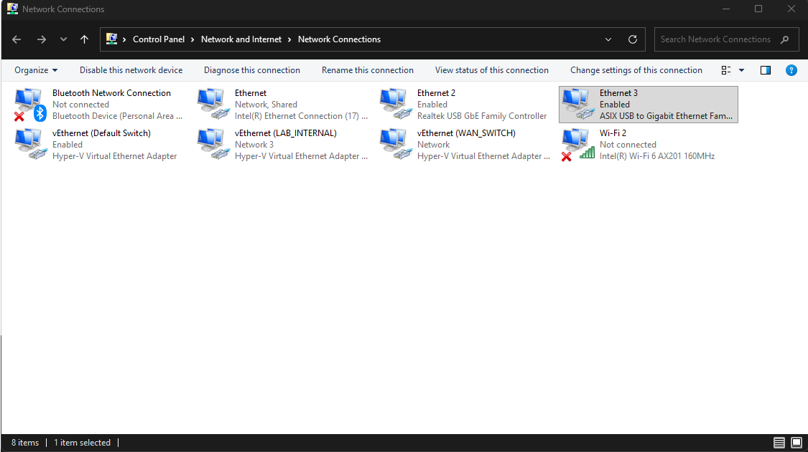
Why a dedicated NIC on the host instead of a capture VM: the adapter carries only the mirrored feed from Fa0/6, so the capture never sees or injects into live lab traffic, and Wireshark sees every frame the adapter receives instead of only what a virtual switch chooses to forward. It's a passive tap in spirit, built out of what was on hand rather than a purpose-built TAP device.
With the capture NIC in place, Wireshark on the Hyper-V host was pointed at Ethernet 3 to start pulling in the mirrored traffic.
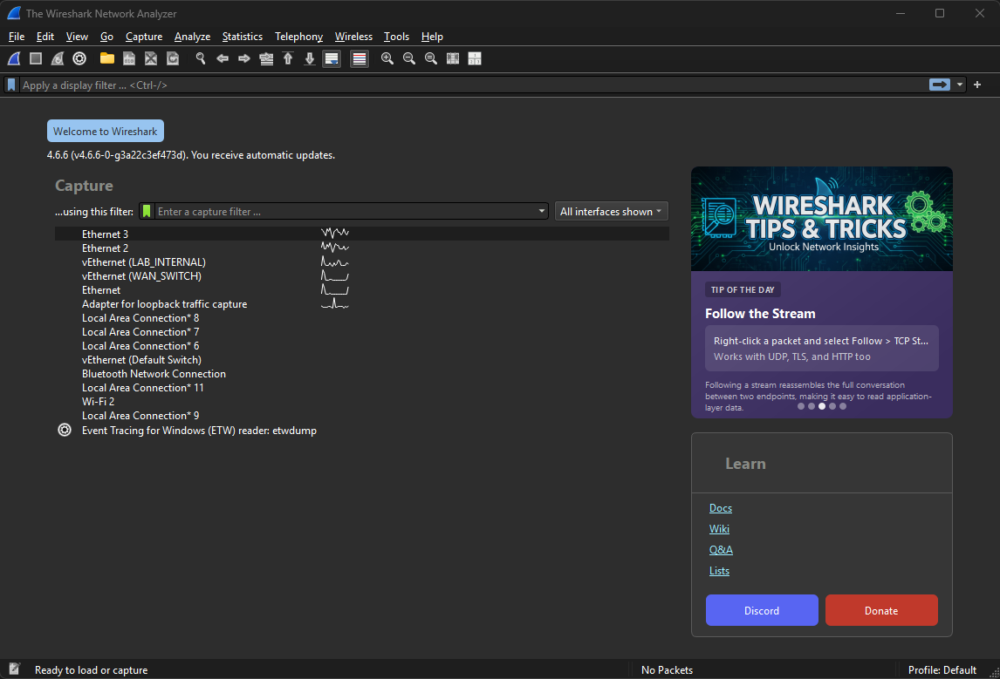
An unfiltered capture immediately showed a healthy amount of Layer 2 control-plane noise mixed in with real traffic: PVST+ BPDUs advertising the STP root bridge, ARP requests, and ICMP echo traffic between lab hosts.
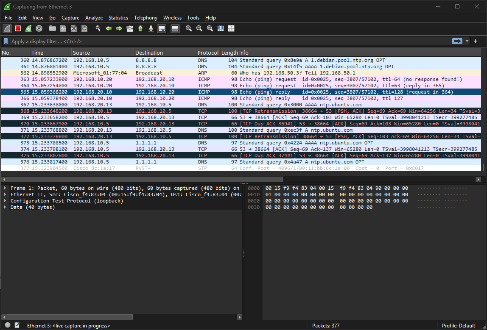
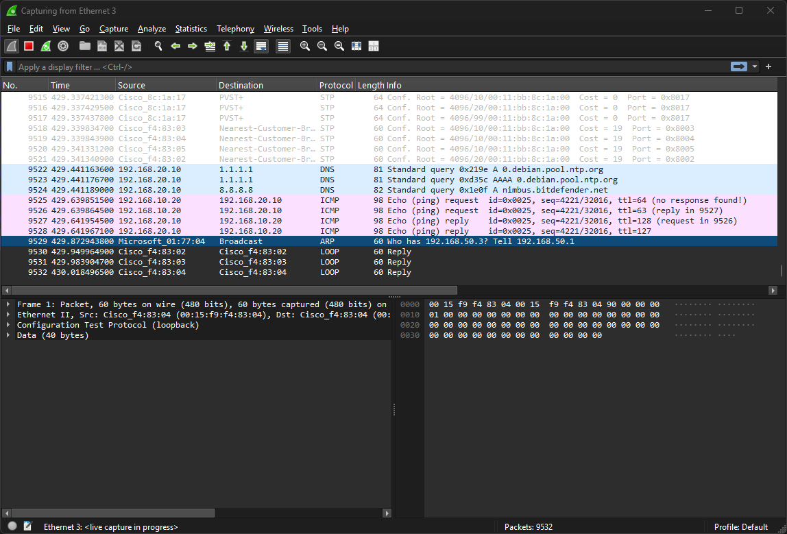
Since Fa0/23 (the inter-switch trunk) was one of the mirrored sources, STP BPDUs and ARP broadcasts dominated the capture. A simple display filter cleared that out and left the traffic actually worth reading:
not stp and not arp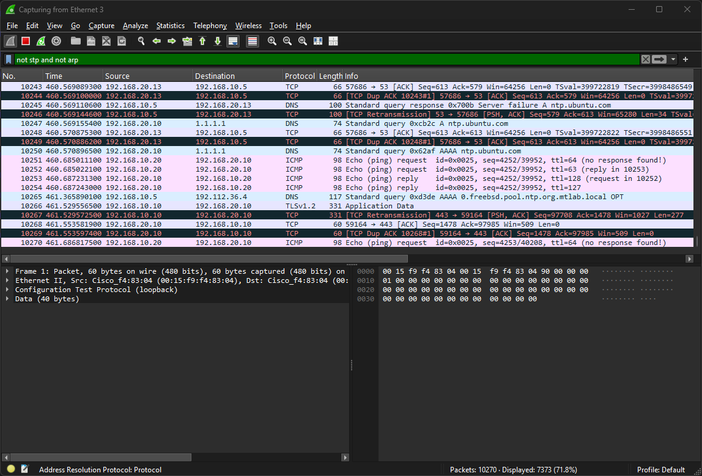
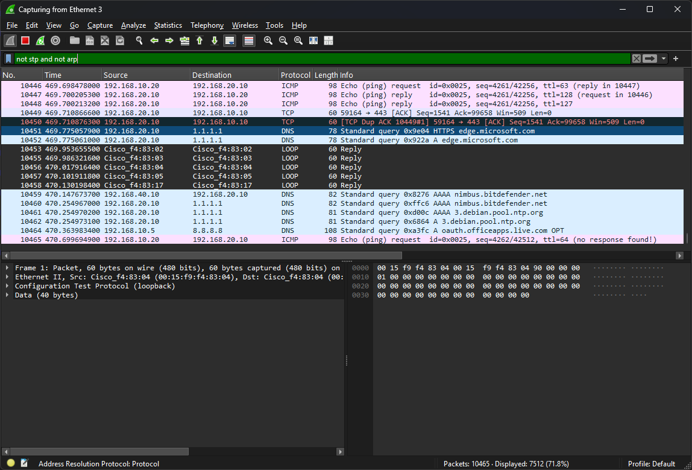
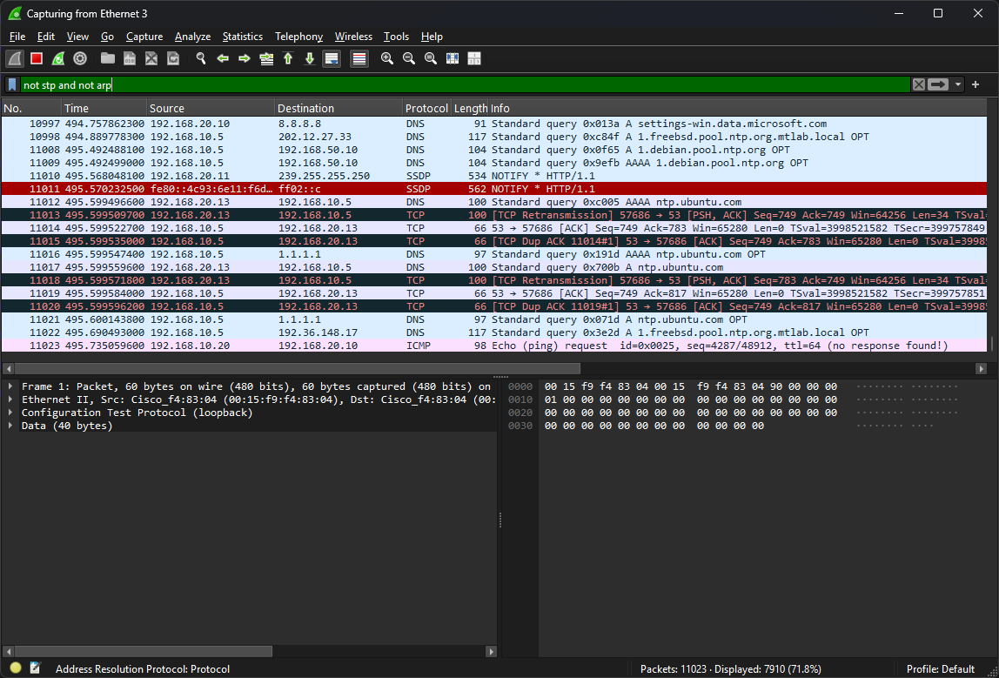
With a clean feed established, protocol-specific filters were used to dig into what individual hosts were actually doing.
Filtering on icmp surfaced steady echo request/reply pairs between 192.168.20.10 and 192.168.10.20, plus a Destination Unreachable (Port Unreachable) response from 192.168.10.5, a clear sign that host was rejecting traffic on a closed port rather than silently dropping it.
Filtering on dns showed repeated queries for 1.debian.pool.ntp.org and 0.freebsd.pool.ntp.org returning Server failure responses from the internal resolver at 192.168.10.5, a useful flag that NTP resolution wasn't fully healthy for at least one lab host.
Filtering on smb caught NetBIOS Host Announcements naming DC01 as a Domain Controller. Filtering on smb2 traced a full negotiate-and-authenticate exchange ending in STATUS_LOGON_FAILURE for a service account, worth following up as a possible stale credential or misconfigured account.
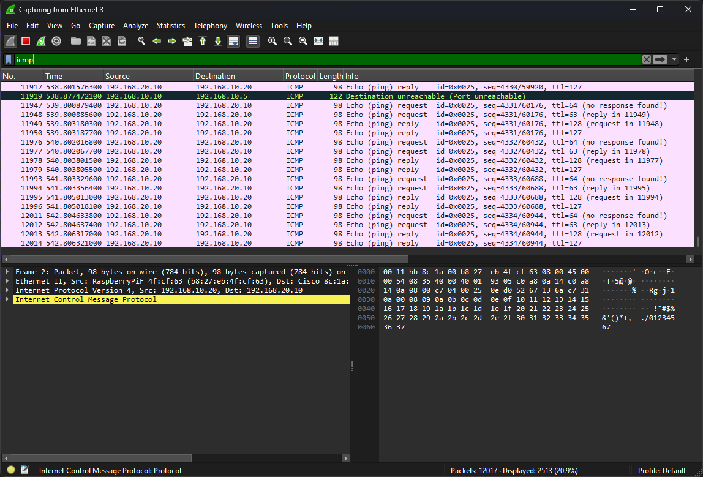
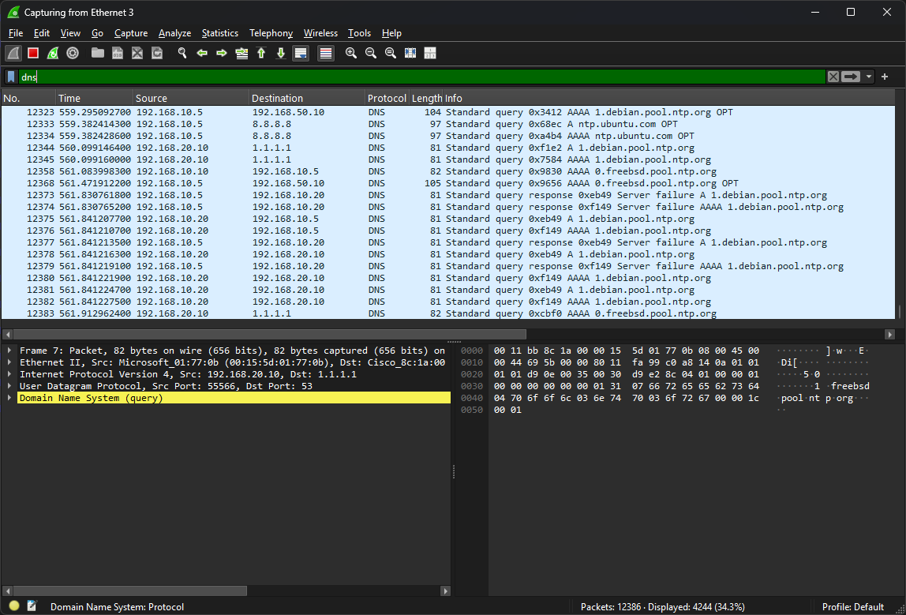
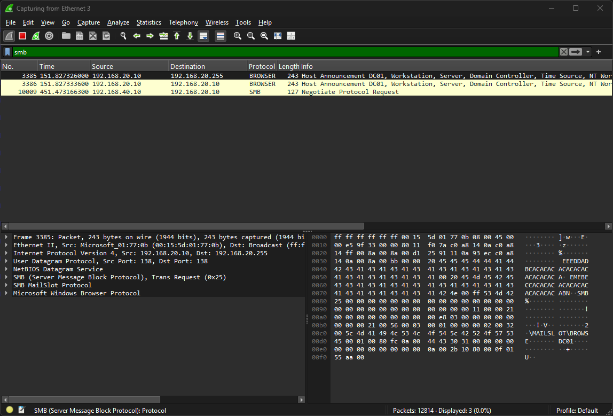
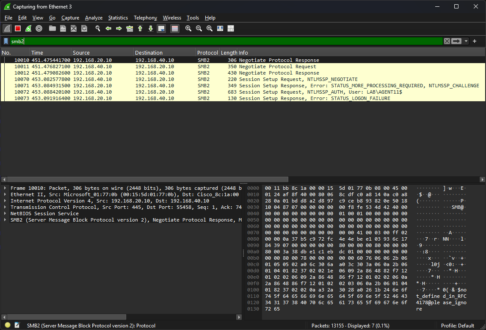
not stp and not arp is the fastest way back to signal.icmp, dns, smb2) turned up concrete, actionable findings: a port-unreachable host, unhealthy NTP resolution, and a failing service account logon, exactly the kind of thing packet analysis is for.